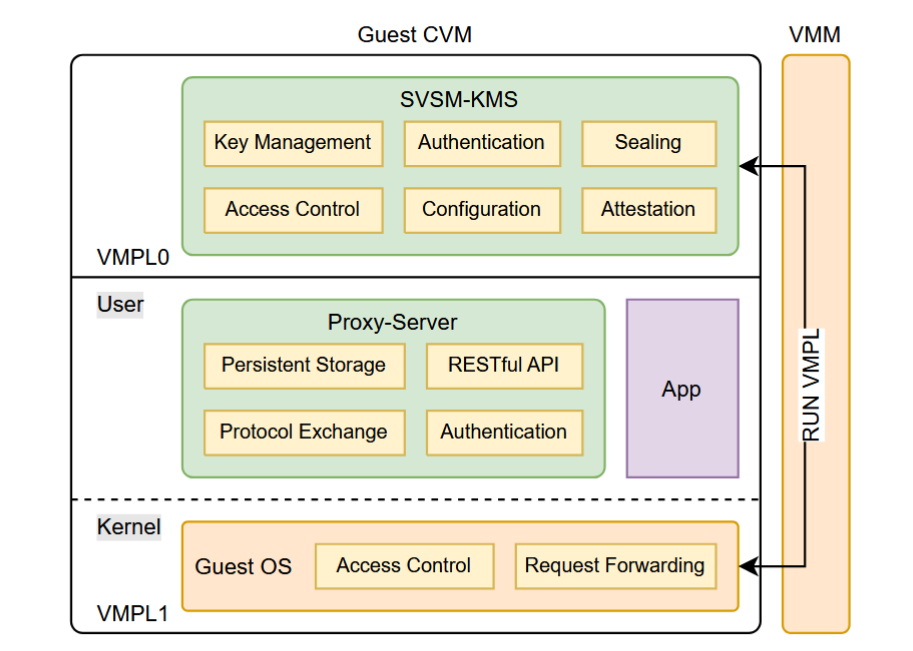
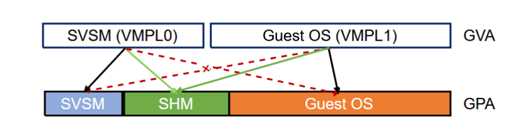

论文《SVSM-KMS：Safeguarding Keys for Cloud Services with Encrypted Virtualization》总结
本文将介绍 2024 年发表在 arXiv 上的论文《SVSM-KMS：Safeguarding Keys for Cloud Services with Encrypted Virtualization》。
解决的问题
密钥管理服务是云环境中最重要的服务之一。集中式密钥管理系统（centralized Key Management System, KMS）通常提供一个统一的平台来进行密钥生成、分发、管理等操作，然而，这会导致可信计算基（TCB）过大，带来单点故障的风险。非集中式的 KMS 是一个方向，但是这会带来为维护多结点一致性的高昂的开销。
云端的安全密钥管理存在许多问题：首先云服务提供商（CSP）拥有对平台的绝对控制权，需要将其视作可信。此外，网络延迟会影响集中式的 KMS 的效率。同时，如果宿主机系统被攻破，还可能导致密钥的泄露。
为了解决这些问题，本文基于 AMD SEV-SNP 所引入的 VMPL 机制和 SVSM 特权软件，设计了 SVSM-KMS，将 KMS 放在 CVM 内的最高 VMPL 特权级，与 host 和 guest 隔离开来。具体来说，本文的贡献如下：
- 基于 VMPL 机制和 SVSM 特权软件，实现了一个原型，将 KMS 与 guest 隔离开来，并评估了系统的性能。
- 引入零拷贝设计以提高性能，实现高效的服务交付。
- 引入代理服务器，使得本系统能够与传统的 KMS 无缝集成。
背景知识
密钥管理系统
安全：KMS 的那些事 - 熊喵君的博客 | PANDAYCHEN
The KMS is an integrated approach for generating, distributing, and managing cryptographic keys for devices and applications. It consists of various components and plays a vital role in securely managing cryptographic keys and secrets. It typically includes functionalities such as key’s generation, storage, rollover and access control. The components of a KMS may include key servers, cryptographic hardware modules, APIs and management interfaces. KMS is essential for protecting sensitive information, ensuring secure communication, enabling data encryption, and meeting compliance requirements. By providing centralized and controlled management of keys, KMS helps organizations maintain the confidentiality, integrity and availability of their data and systems, serving as a crucial foundation for secure operations and safeguarding against unauthorized access and data breaches.
设计与实现
系统设计
SVSM-KMS 的架构图如下所示：

其主要分为三个模块：服务模块、内核模块和代理服务器。
服务模块
运行在 VMPL0 的服务模块基于开源的 SVSM 开发，密钥服务以服务处理程序的形式实现。
内核模块
为了在用户态向服务模块发起请求，需要借助内核的协助。本文实现了一个内核模块，它在目录树暴露了一个设备文件 /dev/svsm，向应用程序提供了 mmap 和 ioctl 接口，用户通过 ioctl 系统调用向内核模块发起请求，内核模块将这些用户请求通过 GHCB 协议传送到 VMPL0 的 SVSM-KMS 中。在服务完成后，内核模块将返回值拷贝回到用户态中。
代理服务器
代理服务器基于 libhv 网络库实现，它使用 mmap 系统调用将共享内存映射到地址空间中，并使用 ioctl 系统调用将用户请求转发给服务模块。
零拷贝设计
在 SVSM-KMS 中，用户的 KMS 请求要经过两轮的转发：首先代理服务器收到请求后要借助 ioctl 系统调用将其转发到内核模块中，然后内核模块再借助共享内存的方式转发给 SVSM-KMS 服务模块。因此降低数据拷贝的开销是至关重要的。
本文基于 VMPL 机制，实现了零拷贝设计。具体来说，整个 CVM 仍然算作是一个“虚拟机”，因此其 GPA 是共享的，VMPL 只是借助 RMP 条目中的 VMPL mask 实现的高特权 VMPL 对低特权 VMPL 的“内存隔离”。在本文设计中，SVSM-KMS 服务模块可以控制 Guest OS 对自己内存区域的可见性，那么它也可以为了通信的高效，专门准备一片内存空间，用于 KMS 请求的转发，双方都可以对这片区域进行读写，这样就消除了不必要的拷贝，同时除此以外服务模块的内存空间对于 Guest OS 来说仍然是不可访问的，确保了安全性。

身份验证和访问控制
KMS 服务的身份验证和访问控制机制实现在 SVSM-KMS 服务模块中，而非代理服务器中，使得其难以被某些攻击手段所绕过。同时，SVSM-KMS 的身份验证和访问控制机制标准与 Hadoop KMS 保持一致。
密封存储与远程证明
机密虚拟机提供的是内存的安全防护，但是对于 KMS 而言，密钥的持久化保存的安全性同样值得考量。SVSM-KMS 借助向 AMD 安全协处理器 PSP 发起密钥派生（key derivation）服务请求获取用以加密的密封密钥，当代理服务器向 SVSM-KMS 服务模块发起 unsealing 请求时数据被读取到内存中并解封，服务结束时再进行密封并持久化保存。
和机密虚拟机可信启动一样，SVSM-KMS 服务模块的初始镜像也可以被度量，并借助远程证明机制进行验证。
无缝集成
为了将 SVSM-KMS 无缝与现有的应用程序集成，本文引入了代理服务器。它的主要作用是进行协议转换（protocol exchange），即将用户态发起的 KMS 请求转换为 SVSM 请求的协议标准。
 微信
微信 支付宝
支付宝